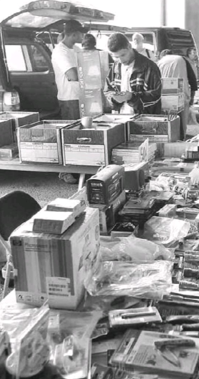
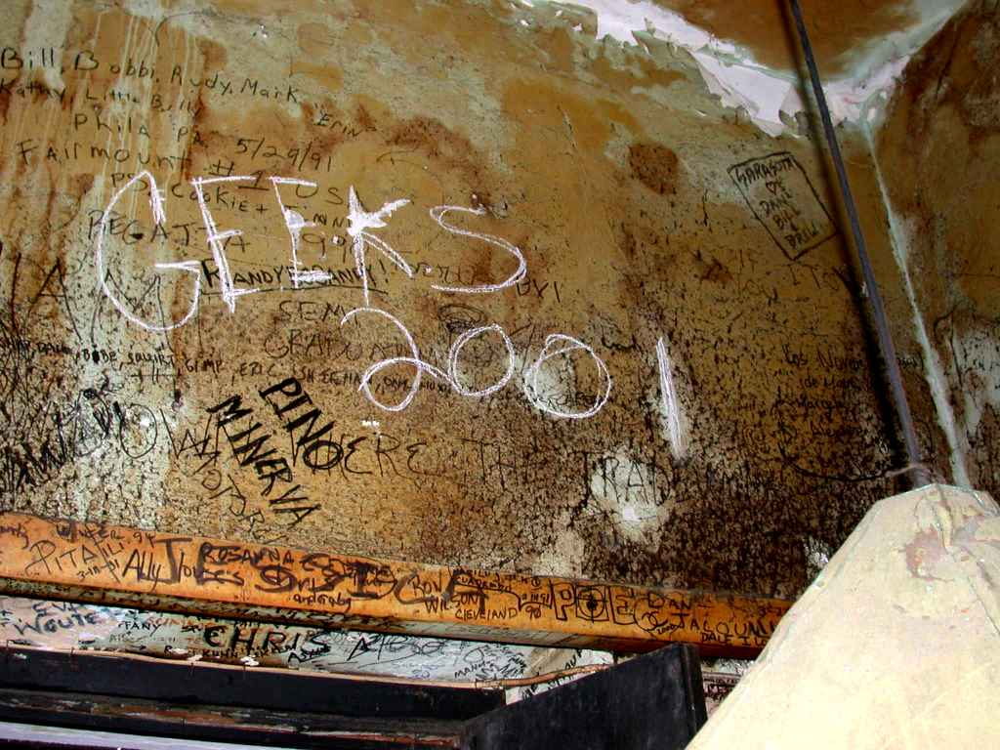
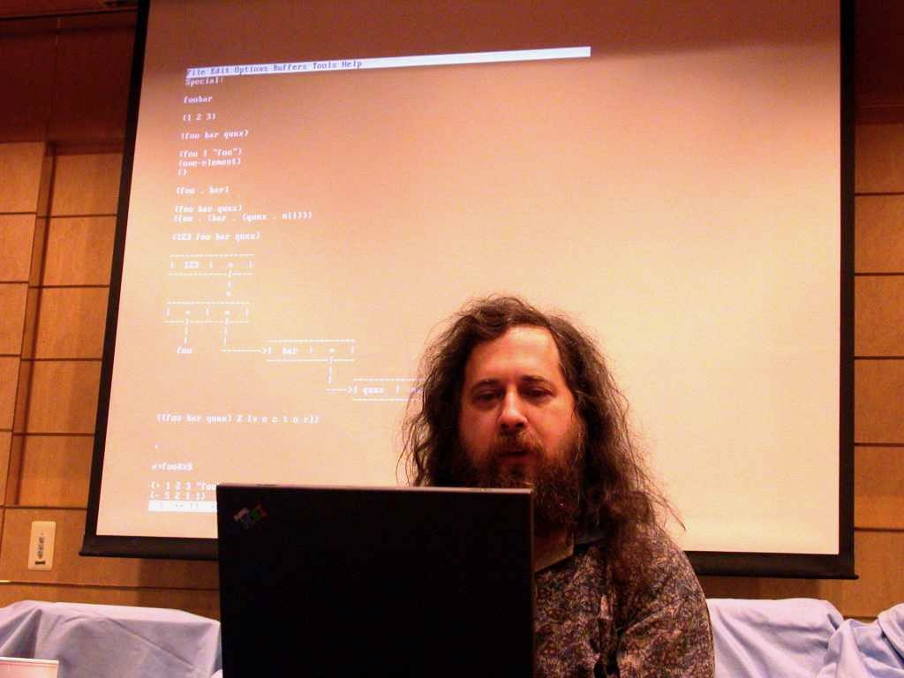
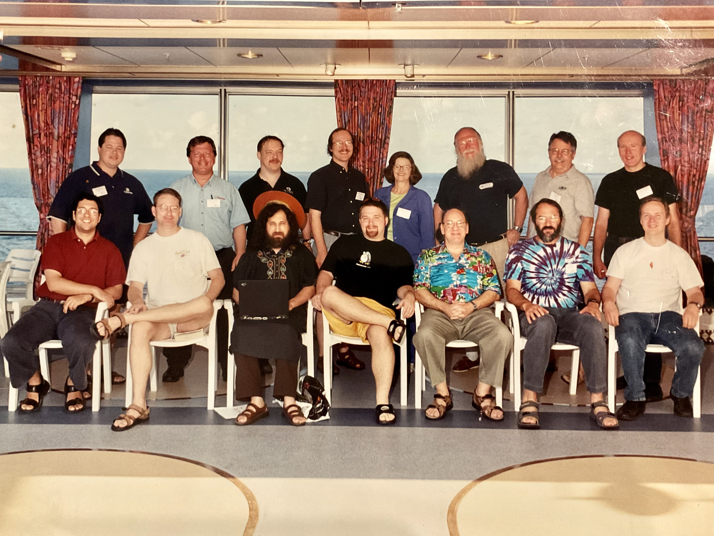
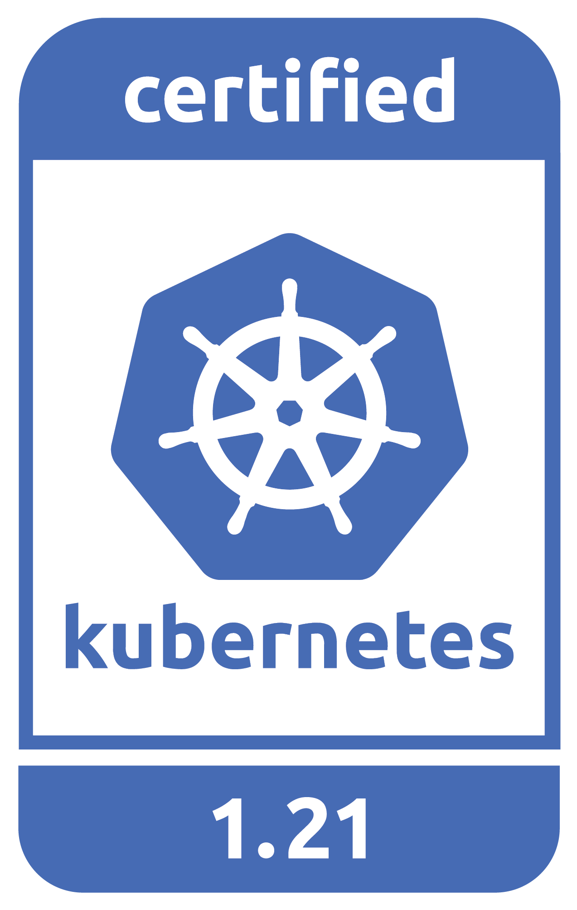
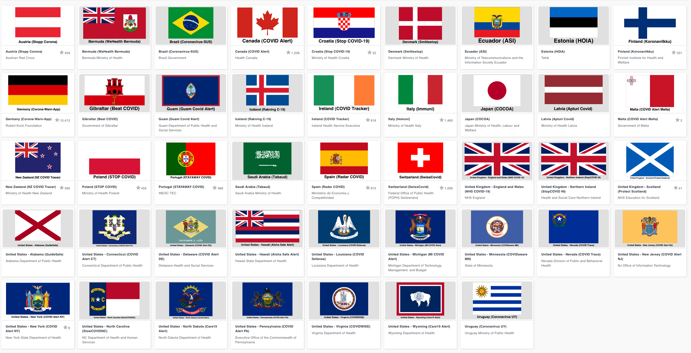

Infrastructure for Innovation
ii.nz - Hippie Hacker
The World Runs on Open
- Open Technology
- Open Hardware
- Open Finance
- Open Innovation
- Open Source
Open Tech Ecosystems Transform Industries
- 100%
- of supercomputers use Linux
- 95%
- of public clouds use Kubernetes
- 70%
- of global mobile networks use ONAP
- 50%
- of new vehicles use Automotive Grade Linux
Make a mark on an entire industry
“It’s one thing to create a great piece of software. It’s quite another to have it make a mark on the entire industry.“
“These are the companies and organizations whose work has had a significant impact on what others build, how they build it, and ultimately, who uses it: Apple, Facebook, Google, IBM, Intel, Microsoft, GitHub, Netflix, Red Hat, Slack, and the Linux Foundation.”
Free Software :: $5
Geeks from back in the day
The OG Hippie Hacker
I learned to code lisp from Richard Stallman.
(on a boat)
Founders of Open Source
Firm Foundations
Many years later, a Global Advisor:
- Cloud Native Computing Foundation
- Catalyst provides Certified Kubernetes
- LF Public Health
- NZ COVID App uses GAEN
- Free Software Foundation
- Public Money? Public Code!
Cloud Native Computing Foundation

NZ CNCF Certified Cloud
Catalyst Cloud announces CNCF certified Kubernetes platform
Public Health - GAEN+Bluetooth
NZ COVID Contract Tracing

Public Money? Public Code!
- No artificial limits
- Meet our own needs
- Invest in local talent
- Particularly our youth
Street Repairs in Tauranga
Investing in our Future
Our youth are the future!
- Tauranga Teens
- speaking overseas on cloud infrastructure
- Cloud Native
- from an early age
- Beyond Us Impact
- servant leaders of tomorrow
- Invest $$$ in our Youth
- They are our future
CNCF Support for Tauranga
The CNCF has offered to help onramp NZ students:
- Curriculm and Training
- for cloud native careers
- Certifications
- to demonstrate capabilities
- Conference Passes
- Online and local events!
- Internship Programs
- (Google Summer of code and others)
ii is Investing in you
We’d like to give you $100
- To Study locally and online with friends
- Connect with a mentor
- Pass the Cloud Native Associate Exam
- Join the Kubernetes Community
- Local Boot-Camp : October 4th-8th
- Attend KubeCon Virtual October 12th-16th (NZ)